Steering Gearbox Removal
Steering Gearbox RemovalSpecial Tools Required
^ Ball joint remover, 28 mm 07MAC-SL0A202
^ Front subframe adapter EQS02BMDXSBO *
^ Front subframe adapter VSBO2C000016 *
^ Engine support hanger, A and Reds AAR-T-12566 *
^ Engine hanger balance bar VSBO2C000019 *
^ Engine hanger adapter set VSBO2C000031 *
* Available through the American Honda Tool and Equipment program, 1-888-424-6857.
Note these items during removal:
^ Using solvent and a brush, wash any oil and dirt off the valve body unit, it's lines, and the end of the steering gearbox. Blow dry with compressed air.
^ Be sure to remove the steering wheel before disconnecting the steering joint. Damage to the cable reel can occur.
^ Lower the front subframe from the body and remove the steering gearbox through the gap produced by lowering the front subframe.
1. Drain the power steering fluid.
2. Make sure you have the anti-theft codes for the audio system and the navigation system (if equipped).
3. Make sure the ignition switch is OFF, then disconnect the negative cable from the battery.
4. Raise the front of vehicle, and support it with safety stands in the proper locations.
5. Remove the front wheels.
6. Remove the driver's dashboard undercover.
7. Remove the steering wheel.
8. Remove steering joint cover (A).
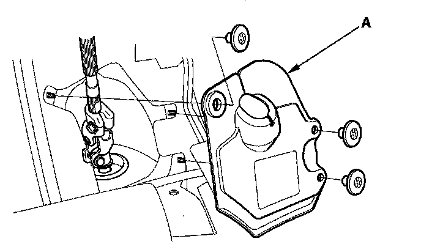
9. Remove the steering joint bolts, disconnect the steering joint by moving the steering joint (A) toward the column.
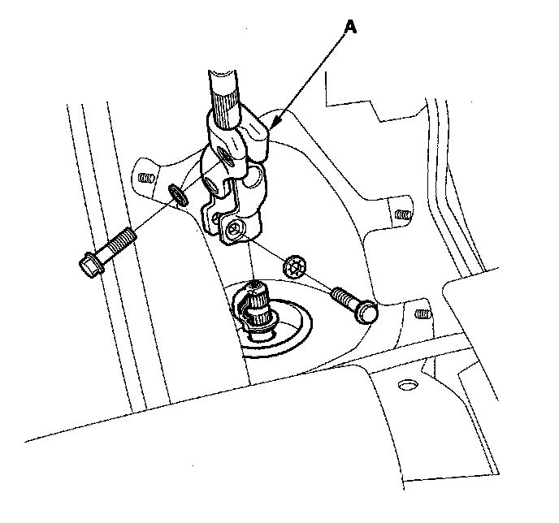
10. Remove the center guide (A) (if equipped) and discard it. The center guide is for factory assembly use only.
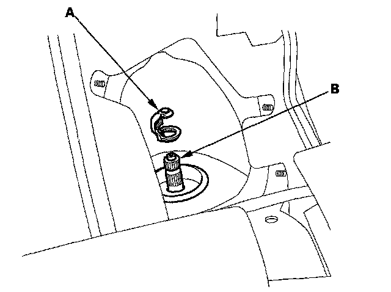
11. Apply vinyl tape to the splines on the pinion shaft (B).
12. Remove the air cleaner housing.
13. Remove the service caps (A) for the front damper flange nuts from the cowl cover (B). Position the engine hanger adapters (VSBO2C000031) with the "FRONT" mark facing forward over the damper flange nuts.
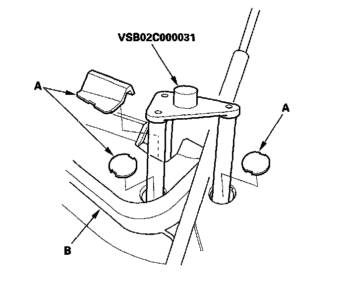
14. Install the engine hanger balancer bar (VSBO2C000019); attach the front arm (A) to the front cylinder head with a spacer (8) and 10 x 1.25 mm bolt (C) attach the rear arm (D) to the rear cylinder head with 8 x 1.25 mm bolt (E).
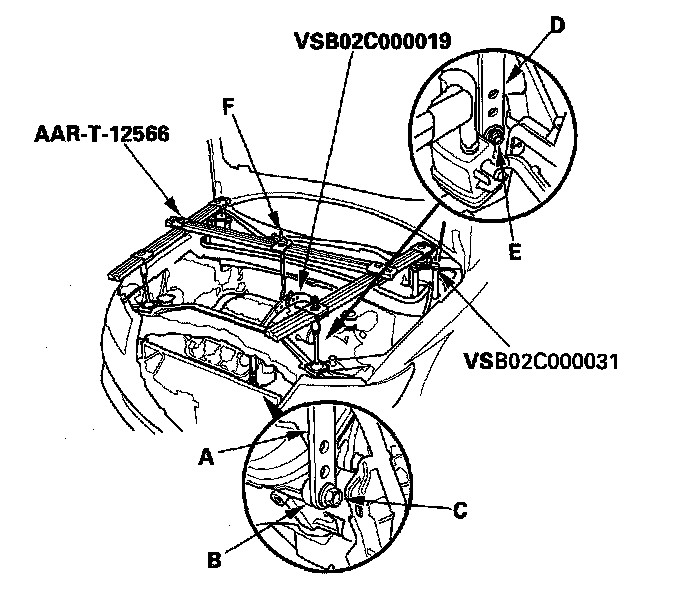
15. Install the engine support hanger (AAR-T-12566) to the vehicle, and attach the hook to the slotted hole in the engine hanger balancer bar. Tighten the wing nut (F) by hand to lift and support the engine/transmission.
16. Loosen the adjustable hose clamp (A) and disconnect the return hose (B).
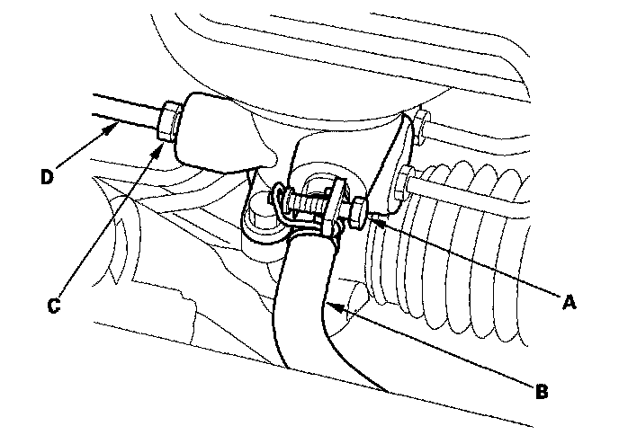
17. Loosen the 16 mm flare nut (C) and disconnect the inlet line (D).
18. Remove the cotter pin (A) from the 12 mm nut (B) and loosen the nut.
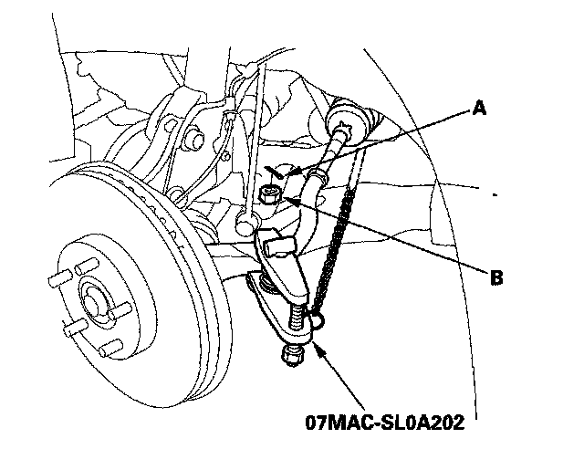
19. Separate the tie-rod ball joint and knuckle using the ball joint remover.
20. Disconnect the lower arm ball joints.
21. Disconnect the stabilizer links (A) from the lower arm on the right and left sides.
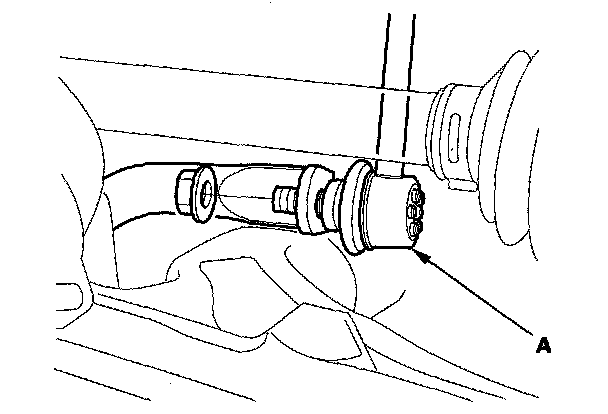
22. Remove the front undercover and the front splash shield.
23. Remove the front subframe stiffener plate (A).
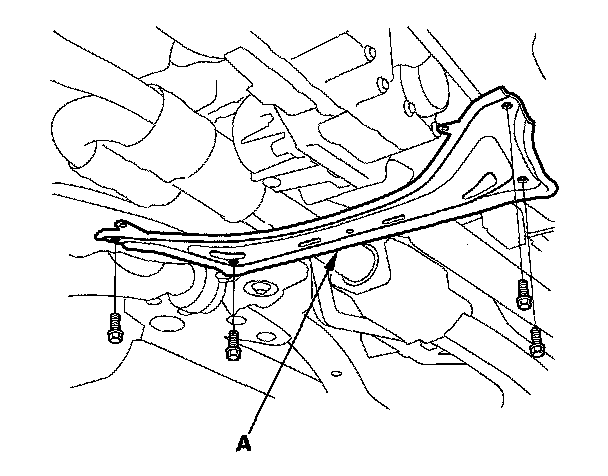
24. Remove exhaust pipe B.
25. Remove the propeller shaft and propeller shaft protectors.
26. Remove the inlet line clamp bolts (A).
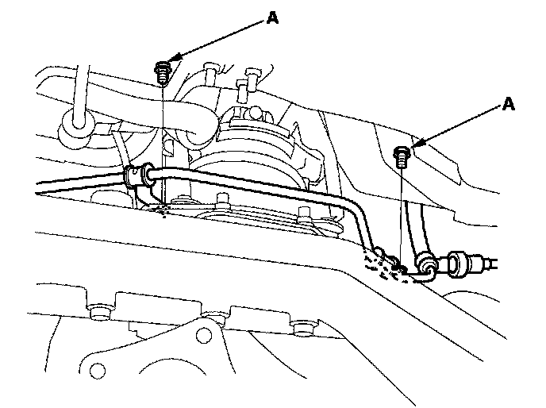
27. Remove the rear mount stop (A) from the rear engine mount.
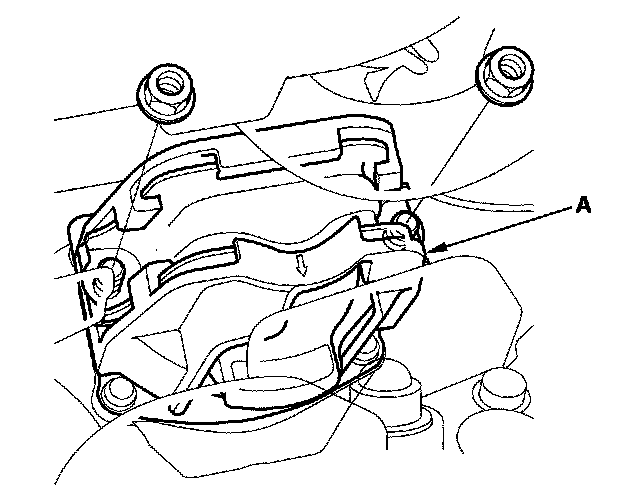
28. Remove the rear engine mount (A) from the base bracket, and move it aside.
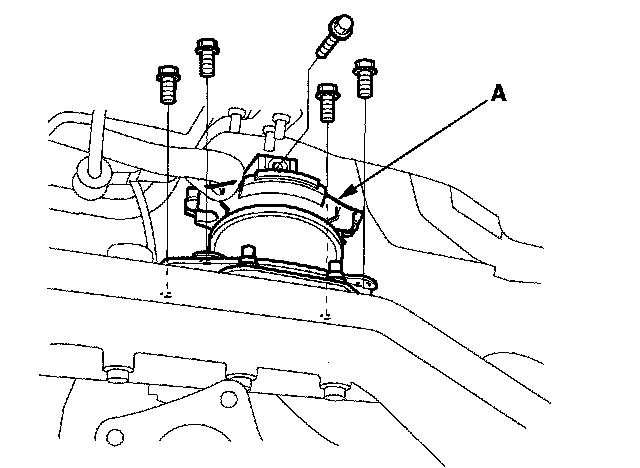
29. Remove the base bracket (A) from the front subframe.
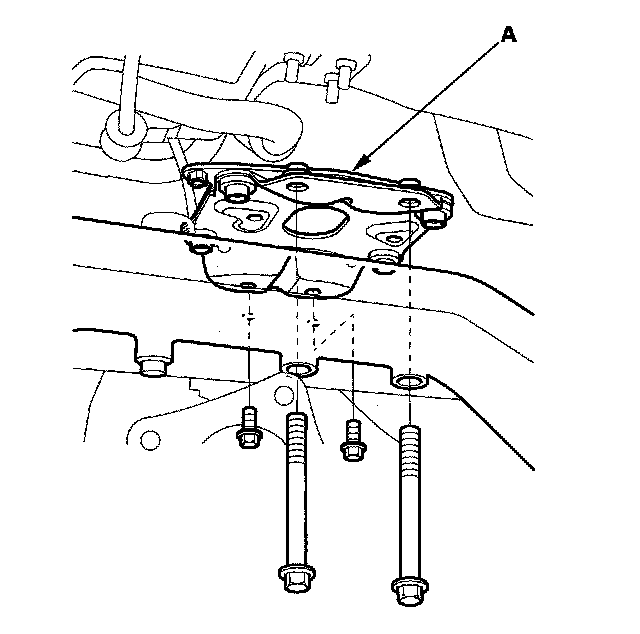
30. Remove the ground cable bolt (A) from the transmission.
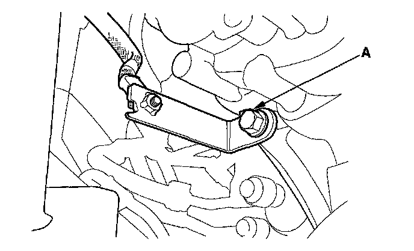
31. Make reference marks (A) on the body across the marks (B) on the edge of the front subframe (C).
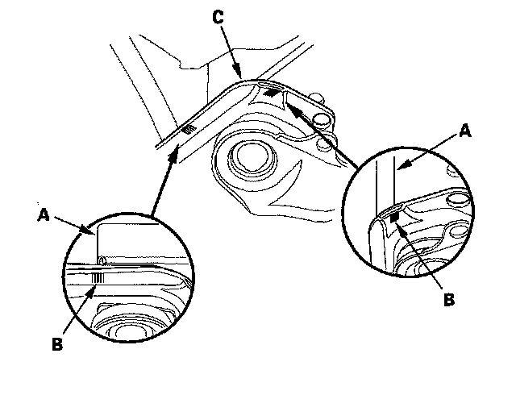
32. Loosen the four bolts (A) holding the adjustable arms (B) of the front subframe adapter to its center plate.
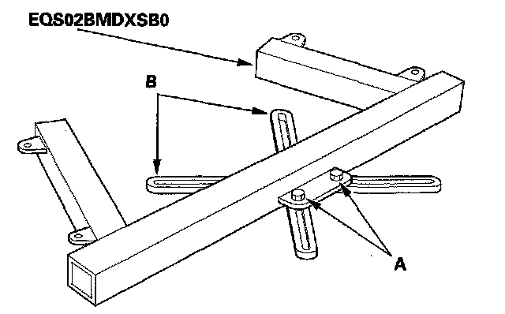
33. Line up the slots in the arms with the bolt holes on the corner of the jack base, then attach the front subframe adapter (A) to the jack base with the bolts (B) that came with the jack. Tighten all bolts securely.
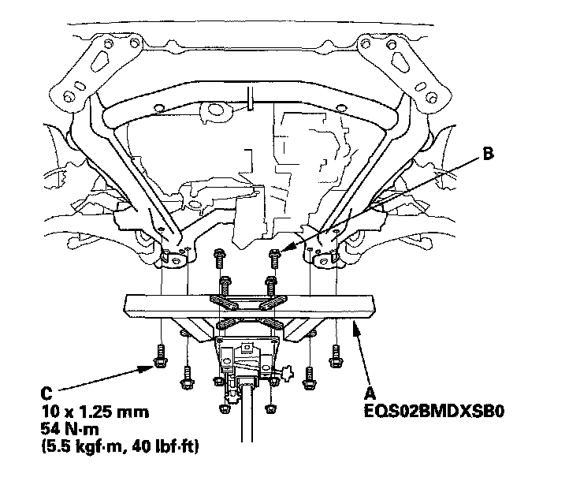
34. Raise the jack to vehicle height, then attach the front subframe adapter to the front subframe using the subframe stiffener mounting bolts (C) and bolt holes.
35. Support the front subframe securely by raising the transmission jack.
36. Remove the mounting bolts (A) from the front subframe front brackets (B).
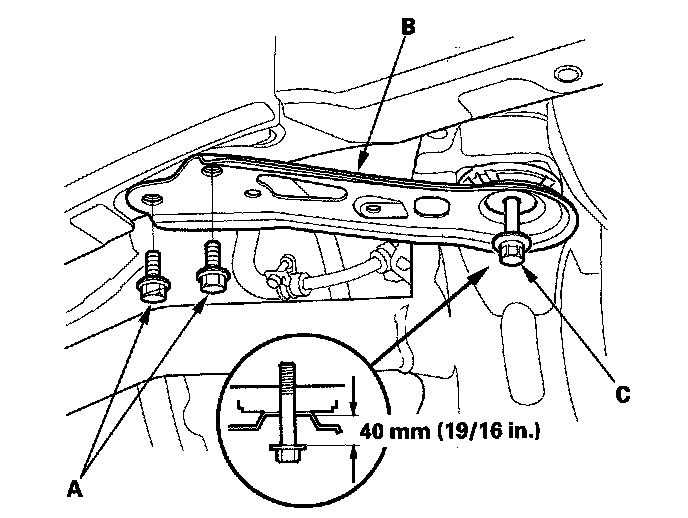
37. Loosen the special bolts (C) on the front subframe front brackets so they are about 40 mm (19/16 in.) from the mounting surface. Do not loosen the special bolts more than necessary.
38. Remove the mounting bolts (A) from the front subframe rear brackets (B).
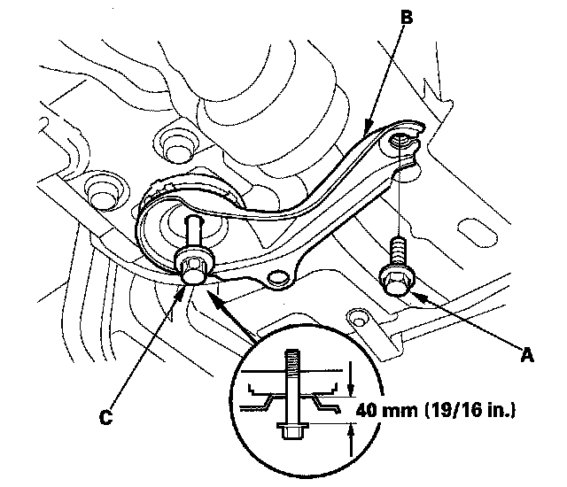
39. Loosen the special bolts (C) on the front subframe rear brackets so they are about 40 mm (19/16 in.) from the mounting surface. Do not loosen the special bolts more than necessary.
40. Lower the transmission jack slowly until the front subframe has dropped about 40 mm (19/16 in.).
41. Remove the mounting bolts (A) from the left side of the steering gearbox.
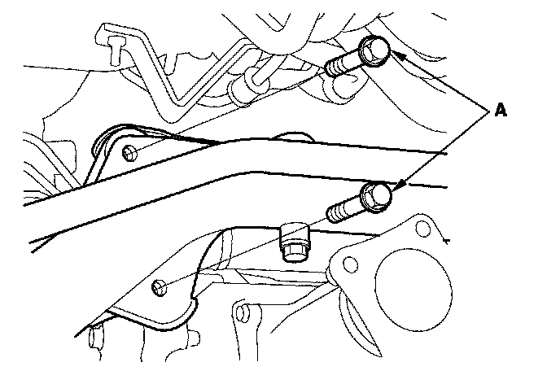
42. Remove the gearbox stiffener bracket (A) from the left side of the front subframe.
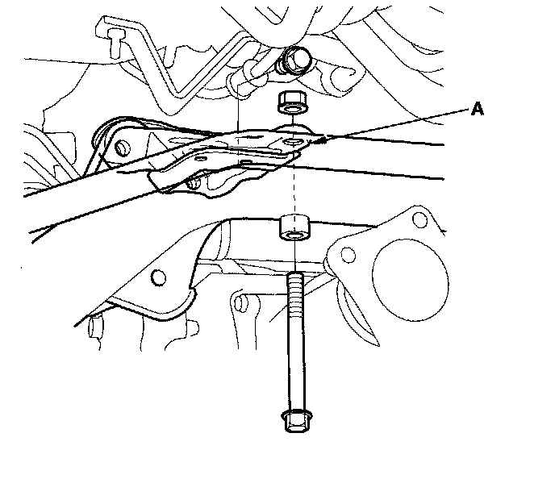
43. Remove the mounting bolts from the right side of the steering gearbox, then remove the mounting bracket (A) and cushion (B).
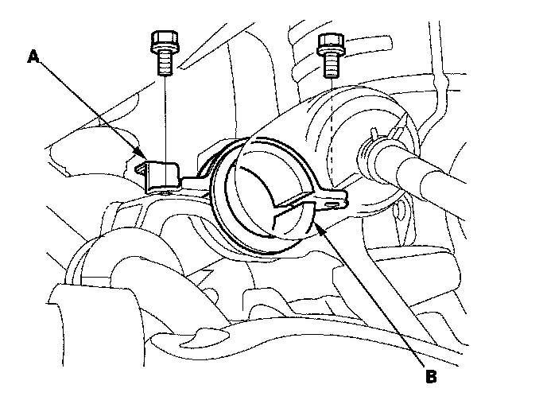
44. Carefully move the steering gearbox (A) toward the driver's side until the pinion shaft clears the wheelwell opening on the frame.
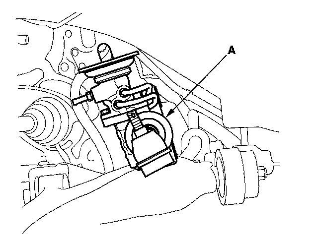
45. Remove the steering gearbox through the wheelwell opening on the driver's side.
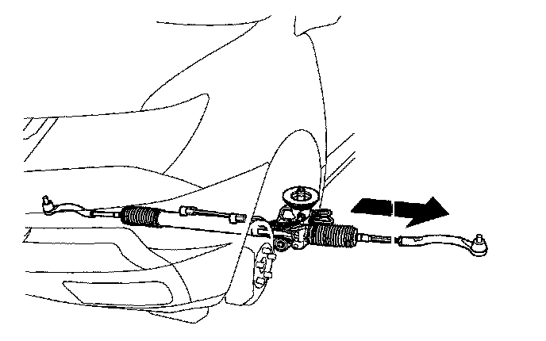
46. Remove the pinion shaft grommet B from the top of the valve housing.
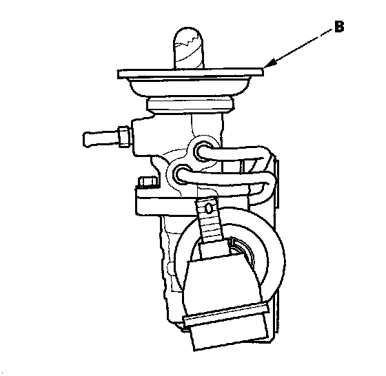
47. Replace the pinion shaft grommet A if necessary.
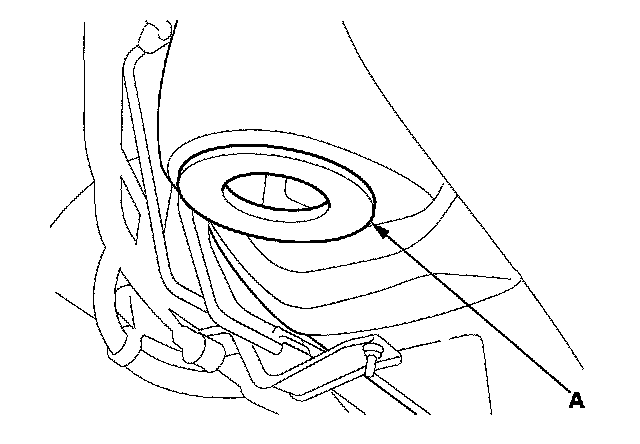
48. After removing the steering gearbox, make sure that no power steering fluid gets on the gearbox mount cushions, gearbox housing, surface of the front subframe and stiffener. Wipe off any spilled fluid at once.